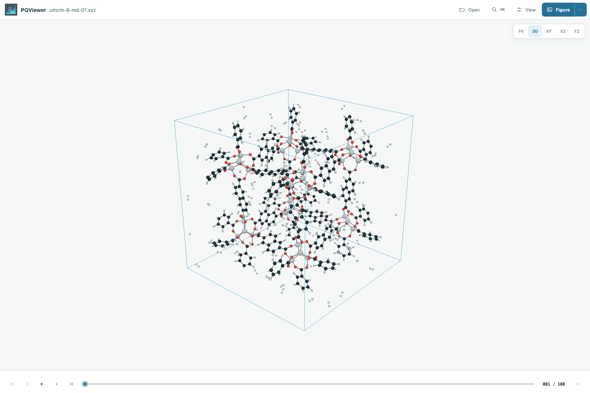
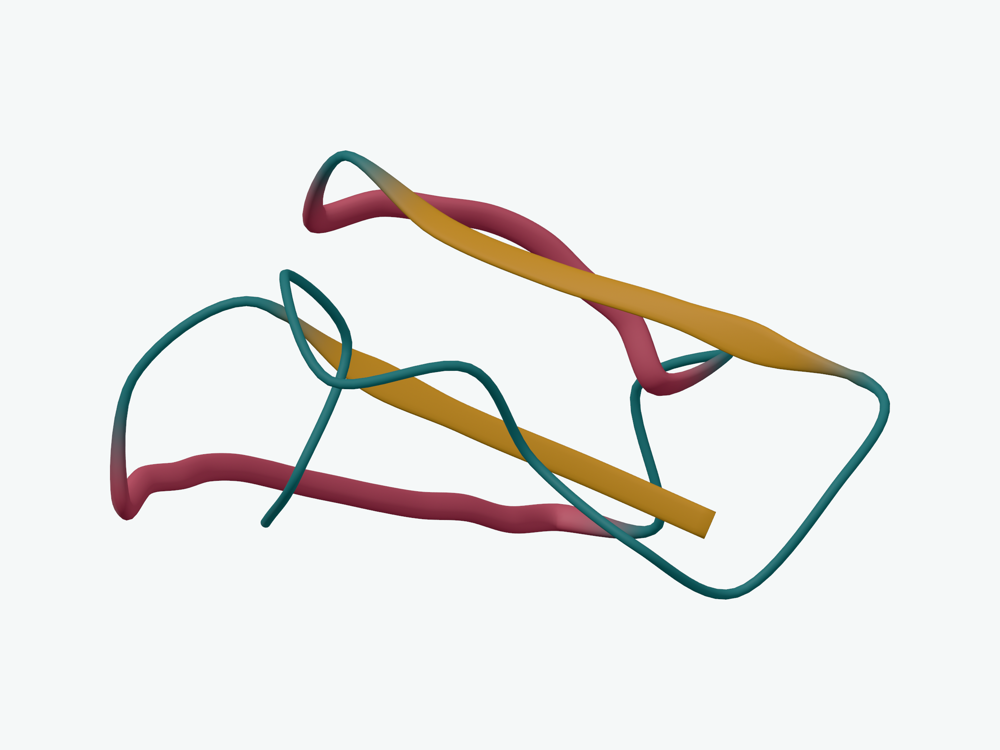
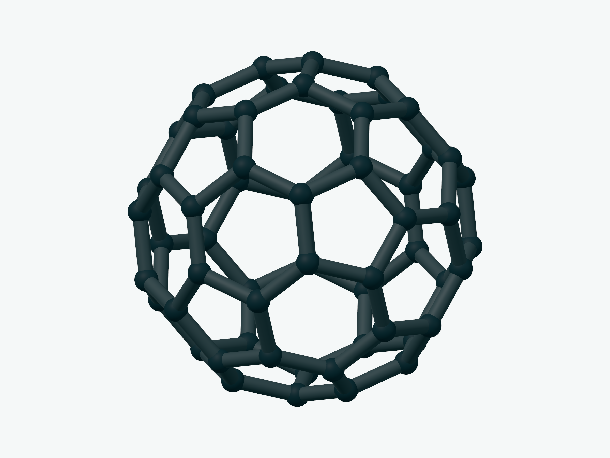
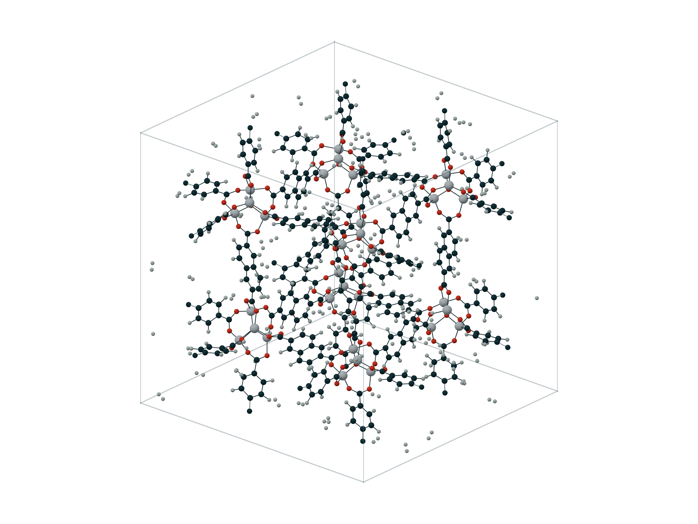
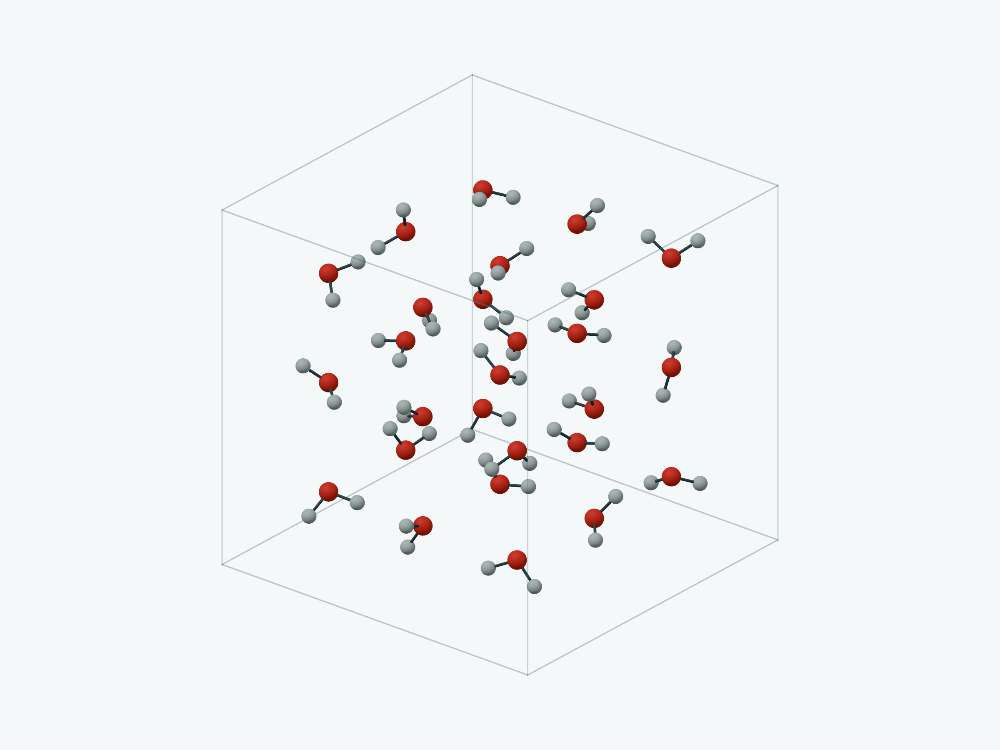
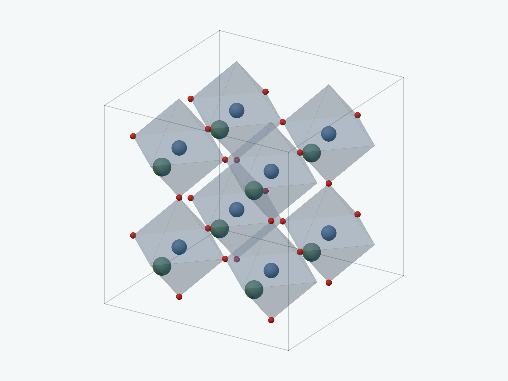
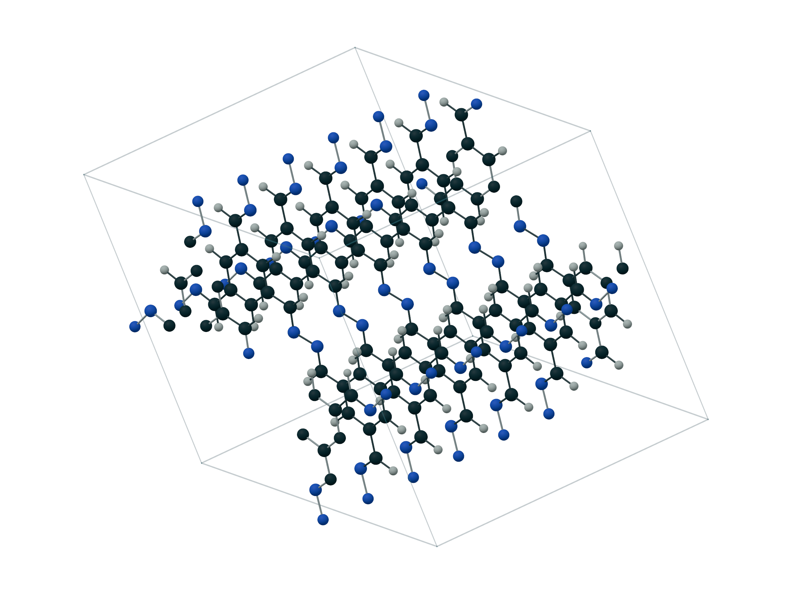

PQViewer#
PQViewer opens molecular structures and trajectories from PQ in a local browser, with optional ASE format support. It provides indexed playback, PQ-centred periodic cells, measurements, and reproducible figure export.
Open the web demo · Get started · Jupyter · Viewer guide · Figure guide · Python API
Note
PQViewer is preparing for its first public beta. File and Python interfaces may still change before 1.0.
Quick start#
PQViewer requires Python 3.12 or newer.
git clone https://github.com/MolarVerse/PQViewer.git
cd PQViewer
python3 -m venv .venv
source .venv/bin/activate
python -m pip install .
pqviewer examples/water.xyz
The interface is bundled with the Python package. Node.js is not required to install or run the viewer.
Web demo#
The fixed-dataset demo keeps edits in the browser. Install PQViewer to open local files, stream trajectories, and run PQAnalysis calculations. See what differs in the web demo.
Trajectory workspace#
The timeline provides frame playback and navigation. Selection, measurements, periodic display, and figure export remain in the same workspace.


UMCM-9 trajectory, frame 1 of 100.#
Documentation#
Use the fixed-dataset viewer and understand its limits.
Embed PQViewer in a notebook cell.
Installation, optional integrations, and the first trajectory.
Navigation, selection, representations, measurements, and shortcuts.
PQ runs, ASE sources, companions, units, and centred periodic cells.
Measurements, tracking, reference frames, and pair analysis.
Publication output and reproducible headless rendering.
Open datasets, pass ASE objects, and create an application.
Resolve browser, file, notebook, and figure-rendering problems.
Scientific systems#
The same viewer and export path cover proteins, isolated molecules, periodic water, crystals, covalent frameworks, and metal-organic frameworks.

PDB 1CRN · 46 residues

Isolated fullerene · 60 atoms

Metal-organic framework · 809 atoms

Centred cell · 27 molecules

2 × 2 × 2 perovskite · contained TiO6 octahedra

Triclinic covalent organic framework
Gallery images were rendered with PQViewer. Crambin coordinates are from PDB 1CRN. ACOF and UMCM-9 are PQAnalysis examples.